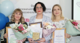
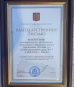

Поздравляем учителя-дефектолога Мамедову Юлию Игоревну
27 апреля 2022 года подведены итоги Краевого этапа конкурса профессионального мастерства «Учитель-дефектолог года – 2022». Город Канск на конкурсе представила учитель-дефектолог МАДОУ № 15 «Сибирячок» Мамедова Юлия Игоревна. В очном этапе педагоги прошли три испытания: «Кейс-метод», «Открытое коррекционно-развивающее занятие с детьми с ОВЗ» и «Мастер-класс». Юлия Игоревна продемонстрировала свое педагогическое мастерство и профессионализм на высоком уровне и по итогам трех испытаний заняла второе место, став Лауреатом конкурса. По итогам конкурса, Ю.И. Мамедова награждена Дипломом Лауреата и денежным сертификатом.

7 марта коллектив МАДОУ №15 в рамках окружного семинара-совещания, организованного Министерством образования Красноярского края, отмечен Благодарственным письмом Губернатора Красноярского края А.В. Усса за активное участие в реализации комплекса мер, направленных на совершенствование системы образования. Поздравляем коллектив детского сада с наградой! Желаем нашему коллективу дальнейшего развития во благо решения задач приоритетного направления системы образования Российской Федерации.
